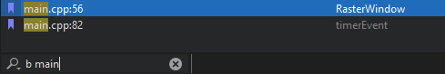

Bookmark code
To insert or delete a bookmark in the Edit mode:
- Right-click the line number and select Toggle Bookmark.
- Press Shift and click the left margin at a line.
- Press Ctrl+M when the cursor is on a line.

Add notes to bookmarks
To add a note to a bookmark:
- Go to Tools > Bookmarks > Edit Bookmark.
- Press Ctrl+Shift+M.
- Right-click a bookmark and go to Edit Bookmark in the context menu.
To view the note, move the mouse pointer over the bookmark or open the Bookmarks view in the sidebar.
Navigate bookmarks
To move to the previous bookmark in the current session, go to Tools > Bookmarks > Previous Bookmark or press Ctrl+,.
To move to the next bookmark in the current session, go to Tools > Bookmarks > Previous Bookmark or press Ctrl+..
Locate bookmarks
To use the locator to go to a bookmark, press Ctrl+K (or Cmd+K on macOS) to open the locator. Enter b and a space to display a list of bookmarks. To filter the bookmarks by line number or a text string, enter the number or string after the space. Double-click a bookmark in the list to go to it in the editor.

View bookmarks
The Bookmarks view in the sidebar lists bookmarks. To move between bookmarks, select the Previous Bookmark or Next Bookmark button or use the keyboard shortcuts.

See also How To: Edit Code and Edit Mode.